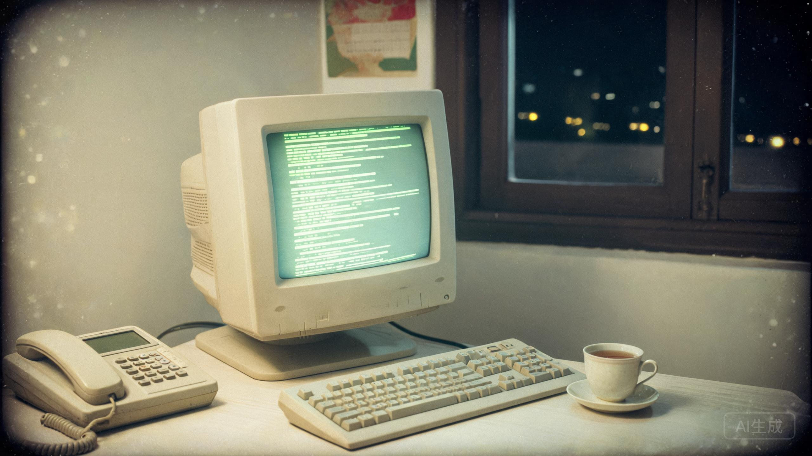

石家庄站 · 站务备份（只读）
本站原定于1998年10月8日零时关闭。

站务公告：本站因“线路调整”于1998年10月8日零时停止服务。所有帖子已做备份。
2026年8月17日03:17，镜像中有一条已删除帖重新出现在列表顶部。管理员未登录。没有人知道是谁顶的帖。
管理员在关站前做过一次全量备份。备份文件被一个叫“石门旧事”的用户拷走，2026年捐给了档案馆。
镜像生成的那一刻，服务器时间是1998年10月7日23时59分。这是第四制药厂主楼爆破前的最后一分钟。
所以，当列表里出现一条2026年的顶帖记录时，管理员在值班记录上写了一个问号。
树洞帖的作者是 04071。他最后一行写着“第三排货架”。凌晨3点17分，那条被删除的帖子，也是从同一个 IP 重新提交的：第四制药厂旧址，地下三层。